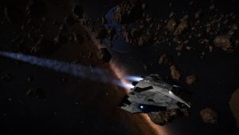

Asteroid after asteroid pass by the cockpit window. It’s been nothing else to see for hours. Engalo sits sideways in the copilot seat leaning backwards aboard the Cobra MKIII «Gazer» The Gazer’s commander, Commander Filip Tane, but all who knows him just call him Gaz. “Are we still on course Engalo?” A deep voice fills the Gazer’s bridge as Gaz enters. “Aye commander, still on course” Engalo replies sitting up in he’s chair. “I can’t understand why you are still flying this old Cobra Gaz, surely you have made enough to advance by now?” Engalo looks over at Gaz sitting down in the pilot seat. “I like this old thing, she has a soul. She even talks to me at night you know…” Gaz looks over at Engalo, an amused look on he’s face. Engalo smiles “Still crazy I see, and it’s still 2 hours to Serebrov Terminal” Engalo leans back in he’s chair letting out a sigh.Engalo stares out the cockpit window again taking a sip coffe out of he’s Hutton mug. Ahead of the ship trough the dense asteroid field the planet HR 6421 4A comes in to view. A little speck of light orbiting the planet could clearly be seen. “There it is, not far now” Gaz says and starts humming a happy tune.
Gaz turns towards Engalo. “You know I’m not the one to ask questions… but what happened to the Anaconda?” Engalo looks back at him. “Cyraios” A pondering look on Gaz’s face slowly turns in to a big smile and a deep chukle. “I see, well the ship are in the best hands then. She was that banged up eh?! There’s no better engineer in the galaxy, if she’s mendable HE will get it done.” “I don’t know…” Engalo mutters. “Still got my Asp tho, but she’s locked down on Jameson Memorial” Gaz looks over the radar screen, a small indistinct blip appears and disappears. Gaz does a visual check. A faint light could be seen far in the distance. “Brave lad, mining all the way out here alone” Gaz says. “Do you think he noticed us?” Engalo shifts in he’s chair. Gaz looks at Engalo. “No, I got the best sensors money could buy and we barely noticed him. So no, not a chance! What is the name of this contact of yours?” “Jennifer, she should be waiting for us on the landing pad when we arrive”
A few hours later…
“Gazer request docking clearance” “Docking request granted, bay 04” Gaz peers out of the cockpit window. The massive orbis starport closes inn as he aims for the small docking slot.
“Will be good to get out of this old Cobra of yours… That was a realy long strech. Hopefully we could use the FSD out of here” Engalo stands up and walks off the bridge.
Down in the cramped quarters Engalo has called his home for some time now he finds a small datapad and put’s it in he’s pocket. “The galaxy have turned crazy, what the hell am I doing here” Engalo mutters to himself. Gaz’s voice sparks over the internal coms. “About to land”
A clank sounds as the Cobra sets down on the landing pad. Gaz meets Engalo at the ramp. “You allright lad” He places a hand on Engalos shoulder. “Yeah… When I bought that Anaconda everything was going to be great. Doing what ever I wanted, exploring the galaxy… instead I end up without any ship, dealing with shady scum trying to get my old Asp back from the clutches of The Dark Wheel” Gaz and Engalo starts to walk down the ramp on to the docking bay floor. A couple of robots starts moving with a Hydrogen fuel refiller unit towards the ship. “Wasn’t she suposed to meet us here?” Gaz looks around the docking bay. “Indeed she w…” Engalo’s eyes widen. Infront of them a young confident girl walks towards them. Here dark haflong hair waves as she walks. “You two are late..” She says harshly. “I’m sorry, takes some time navigating a asteroid ring on inpulse” Engalo reaches out he’s hand. “Engalo, nice to meet you” Jennifer looks at Engalo’s hand. “You don’t expect me to touch that are you? Follow me…”
To be continued…